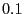

Next: The case of linear Up: Gurobi Guidelines for Numerical Previous: Making the algorithm less
As we have seen, whenever we solve a problem numerically, we have to
accept that the input we provide and the output we obtain may differ
from the theoretical or mathematical
solution to the given problem. For example, , in a computer,
will be represented by a number that differs from by about
 . Thus, a natural thing to worry about is if these small
differences may induce large differences in the computed solution.
. Thus, a natural thing to worry about is if these small
differences may induce large differences in the computed solution.
This is the idea behind the notion of the Condition Number for a given problem. While it is true that for most practical optimization problems, small perturbations in the input only induce small perturbations in the final answer to the problem, there are some special situations where this is not the case. These ill behaving problems are called Ill Conditioned or Numerically Unstable.
This sections aims to show, in the context of linear optimization problems, the most common sources for this behavior, and also how to avoid the behavior altogether. We will review first the problem of solving linear systems with unique solutions, and then move into the more central issue of linear optimization problems, its geometric interpretation, and then describe some of the most common bad cases. We then provide two thought experiments with interactive material to help illustrate the concepts of this section. We conclude with some further thoughts on this topic.
Note that although the notion of the Condition Number has received a lot of attention from the academic community, reviewing this literature is beyond the scope of this document. If you want to start looking into this topic, a good entry point can be the Condition Number page at Wikipedia.